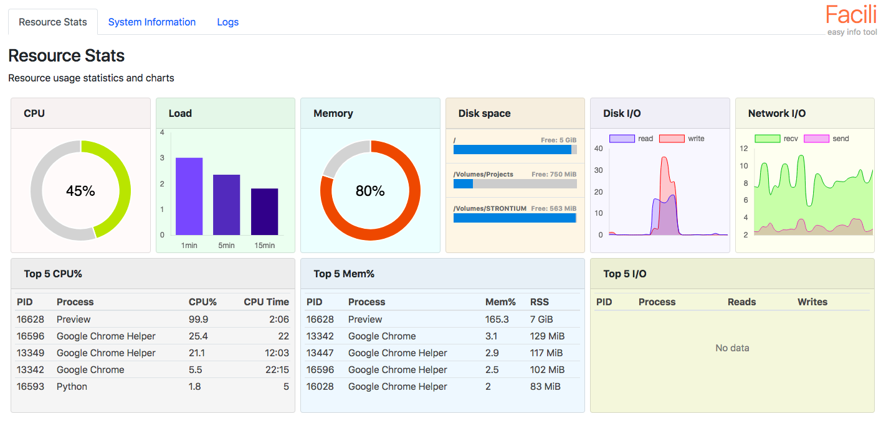
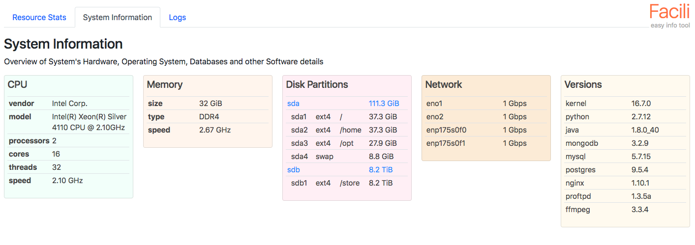
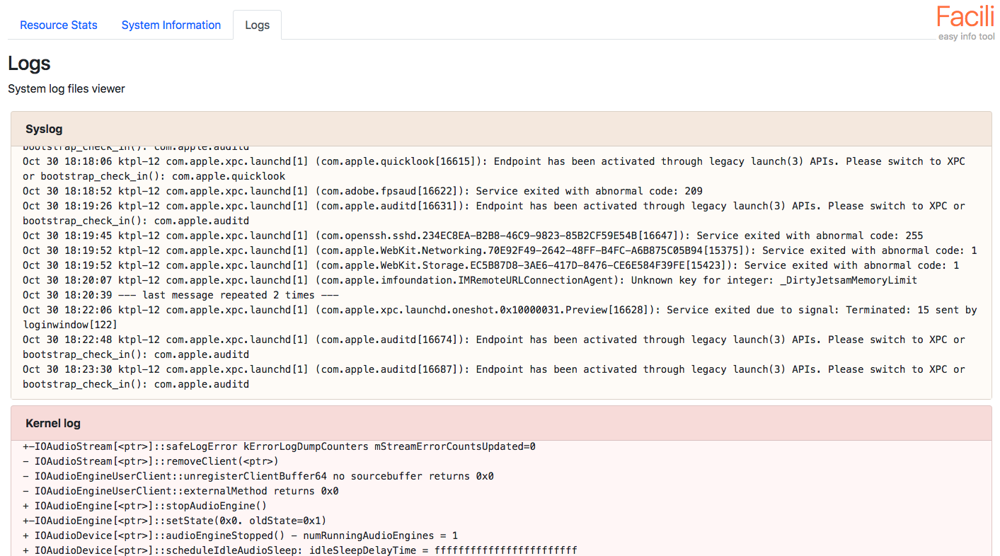

About Facili
Facili is an intuitive, easy-to-configure-and-use system information display tool plus framework.
- Cross-platform: works on Linux, macOS and Windows.
- Responsive: web frontend adapts to any screen size - Desktops, Laptops, Mobile phones and Tablets.
- Easy to extend plugins-based Architecture. Write and integrate your plugins within minutes!
- Built using Python, HTML5, CSS3, jQuery and Bootstrap4.
Screenshots
Screenshot 1: Resource Monitor plugin

Screenshot 2: System Information plugin

Screenshot 3: Logs plugin
